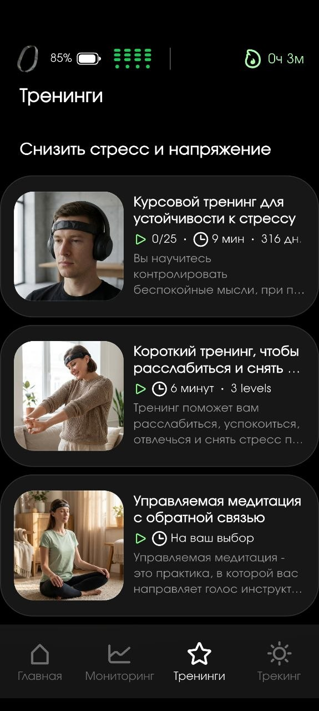
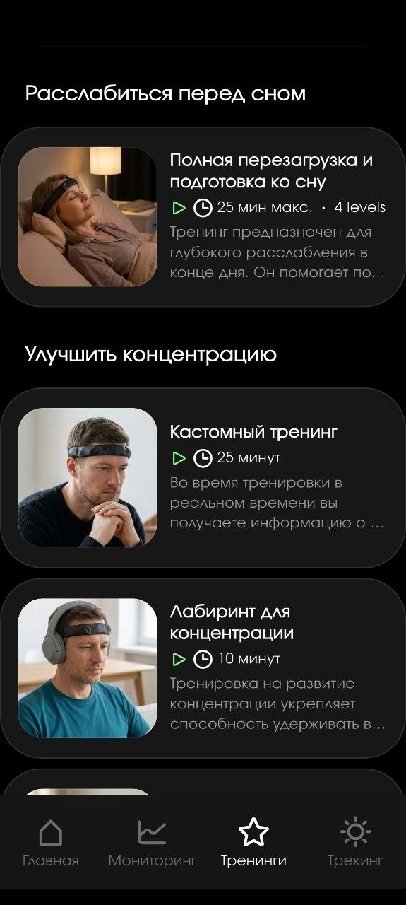
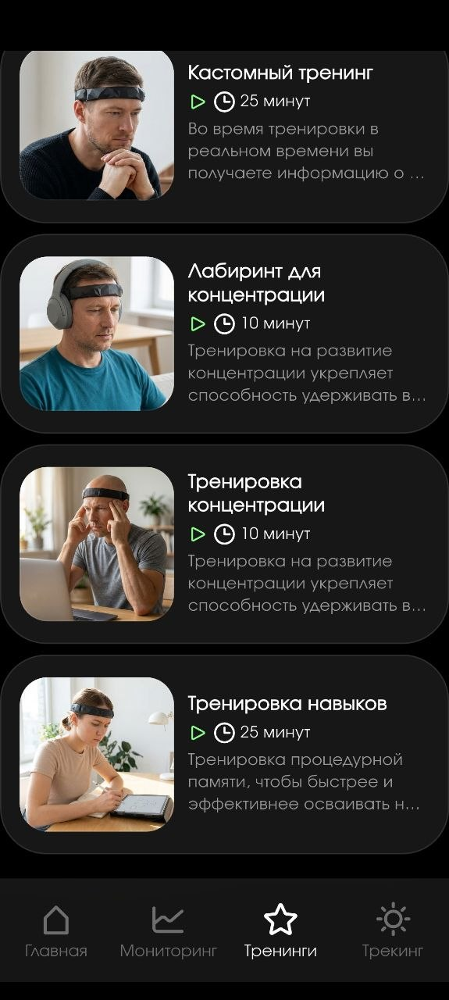

Ты знаешь, насколько пластичен твой мозг прямо сейчас? А сможешь его сдвинуть за шесть недель?
Измерить→Научиться читать→Сдвинуть в цифрах
MNPI Checkup Neiry превращает состояние твоего мозга в одну цифру — индекс от 0 до 100, собранный из четырёх измерений (SI · DI · RI · PI). Это не просто замер, а полный цикл: пять ЭЭГ-сессий на нейробенде Neiry, 36+ метрик, два обучающих модуля, тест на знание данных, персональная тренировка со специалистом по 7 режимам сознания, четыре закрытых материала и месяц на платформе AI NIHILO.
Через 4–6 недель — повторный чекап. Point A → Point B, в конкретных цифрах: альфа +5–8%, стресс −7–10%, скорость входа в состояние −15–20%. Не «я стал спокойнее» — сдвиг показателей.
Пройти чекап-курс →Три тарифа — от 10 000 ₽ в записи до 75 000 ₽ с нейробендом в комплекте. Записи и материалы остаются навсегда.
01 BASE02 BODY03 DEPTH04 ACTIVE PRESENCE05 ANTENNA
провокация
Нейропластичность — это не абстракция из научпопа.
Это конкретная способность мозга переходить между состояниями. Входить в глубокое расслабление. Удерживать его под давлением. Быстро переключаться между режимами работы.
Мозг, который умеет это делать, восстанавливается быстрее, принимает решения яснее и реже застревает в стрессовых петлях. Мозг, который не умеет — работает на износ. Даже если человек этого не замечает.
Разница видна на ЭЭГ. Она измерима. И она меняется — если знать, с чем работать.
MNPI — Multidimensional Neuroplasticity Index — система измерения, разработанная в рамках исследовательской программы ONTO NOTHING × Neiry. Чекап — это первый шаг: базовый нейрофизиологический снимок плюс обучение читать свои данные.
состав курса
Это не просто замер. Это полный цикл: измерение, понимание, применение.
Чтобы данные имели смысл, нужно три вещи: замер, знание того, что он значит, и навык работы с результатом. Чекап-курс даёт всё три — в одной программе.
🧠
Пять диагностических сессий
Базовый снимок → Тело → Глубина → Тишина с открытыми глазами → Антенна. Каждая сессия — одно состояние сознания с тремя блоками записи ЭЭГ.
🧪
Тест на знание данных
Проверка того, что ты понимаешь, что именно замерил. Метрики, суб-индексы, их история и смысл. Без этого цифры на экране — просто цифры.
🔬
Модуль «Гипотеза и проверка»
Нейроданные сами по себе ничего не доказывают. Гипотеза превращает их в инструмент. Модуль учит базовой исследовательской механике.
⚡
Модуль «7 режимов сознания»
Функциональные состояния как операционная система мозга. Что они дают, на что влияют в теле и в когнитивной работе, как их верифицировать на ЭЭГ.
🎯
Персональная тренировка · 40 мин
С сертифицированным специалистом по 7 режимам сознания. Один на один. По твоим данным чекапа. Вход в целевой режим под руководством.
Бонус
🔒
Четыре закрытых материала
Два гайда (мобильное приложение + Capsule) и две книги («История EEG от лягушки до нейронов» + «Большой взрыв сознания»). Нигде больше не продаются.
⌘
Платформа AI NIHILO · 1 месяц
Цифровой помощник на Claude Opus 4.7 с 5 агентами феноменологии. Отчёты, графики, аудиодневник, закрытый контент, сообщество, верификация данных.
↻
Курс на встроенных тренингах Neiry
Программа из протоколов приложения: стресс, концентрация, сон. 2–3 раза в неделю × 4–6 недель с биологической обратной связью.
◷
Живой Zoom-тренинг · ~3 часа
5 сессий подряд в один день с группой. Обратная связь после каждого замера, 2 перерыва. В тарифах «Тренинг» и «Нейробенд + курс».
механика сессии
Пять сессий. Пять состояний. Одна точка отсчёта.
В каждой сессии три блока записи ЭЭГ с нейробандом: открытые глаза — закрытые глаза — снова открытые. Нейробанд пишет непрерывно. После каждой сессии — несколько вопросов о том, как ты себя ощущал изнутри.
Это первый слой феноменологии. Его сравнение с ЭЭГ даёт неожиданные открытия. Иногда мозг находится в глубоком состоянии, а человек убеждён, что ничего не происходило. Иногда наоборот.
👁
Открытые
10 мин
→
🔒
Закрытые
15–25 мин
→
👁
Открытые
10 мин
→
📝
Вопросы
~5 мин
Никакого специального опыта не нужно. Нужен нейробенд, тихое место и 35–45 минут.
оборудование
На этом приборе проходит программа · Neiry MindTracker
Вся программа работает на нейробенде Neiry MindTracker — персональном интерфейсе мозг–компьютер, разработанном в России. Это не фитнес-браслет и не обруч с базовой пульсометрией. Внутри — связка из трёх независимых сенсорных систем, которая позволяет снимать одновременно электрическую активность мозга, сердечный ритм и положение тела.
Стилизованное изображение · сухие ЭЭГ-электроды
Brain–Computer Interface
Три сенсорные системы в одном нейробанде
ЭЭГ снимает электрическую активность мозга в реальном времени. ФПГ-датчик параллельно регистрирует сердечный ритм и вариабельность. IMU (гироскоп + акселерометр) отслеживает положение и микродвижения, чтобы отделять сигнал мозга от артефактов движения.
Сухие электроды медицинского силикона с золотым покрытием — не требуют геля, не залипают, не искажают сигнал. Ноу-хау, позволяющее записывать ЭЭГ в бытовых условиях качеством, близким к лабораторному.
ЭЭГ
электрическая активность мозга
ФПГ
сердечный ритм и HRV
IMU
гироскоп + акселерометр
Au
золотые сухие электроды
⚡
Индивидуальная калибровка
Алгоритмы настраиваются под физиологию конкретного человека. Метрики считываются из его персонального профиля, а не усреднённой «нормы».
📡
Беспроводная связь по Bluetooth
Работает с приложениями на iOS 16+, Android 10+, Windows и macOS. Никаких проводов во время сессии — только нейробенд и тишина.
🔬
Лабораторное качество сигнала
Российская разработка, сертифицированная для исследовательских задач. На данных Neiry строятся научные программы — включая исследования ONTO NOTHING.
◎
Neiry Headband
флагман · полный набор датчиков
◐
Neiry Headphones
наушники со встроенной ЭЭГ
◑
Headphones Lite
облегчённая версия
Для прохождения чекапа подойдут все три форм-фактора. Флагман — Neiry Headband — покрывает максимальный набор метрик. В тарифе 3 «Нейробенд + курс» (75 000 ₽) устройство входит в пакет и остаётся у тебя навсегда.
Пять состояний сознания — от простого к сложному. Каждое открывает свой слой данных о твоём мозге.
~35 мин · Point A
Сессия 1 · Базовый нейроснимок
POINT A · базовая координата
Твой мозг в обычном состоянии и первый вход в тишину. Никаких заданий. Никаких правильных ответов. В закрытых глазах — задача одна: найти промежуток между двумя мыслями и остаться в нём. Большинство людей никогда там не оказываются — следующая мысль приходит раньше, чем человек замечает паузу.
Что фиксируется: базовый нейрофизиологический снимок. Уровень активности, стресса, альфа-синхронизации, вариабельности сердечного ритма. Это не хорошо и не плохо — это факт, от которого можно двигаться.
~35 мин · Интероцепция
Сессия 2 · Тело
INTEROCEPTION · канал к телу
Внимание переносится из головы в тело. Живот, грудь, ладони, ступни — или всё тело сразу как единый поток. Интероцепция — способность слышать собственный организм — один из ключевых маркеров нейрофизиологического здоровья. У одних канал широко открыт, у других почти закрыт: они живут в голове и не слышат, что тело давно сигналит.
Что фиксируется: насколько канал интероцепции у тебя открыт. Как ЭЭГ и HRV реагируют на перенос внимания в тело. Сохраняется ли контакт с телом при открытых глазах.
~45 мин · Окно нейропластичности
Сессия 3 · Глубина
HYPNAGOGIA · альфа-тета баланс
Граница между бодрствованием и сном. Нейробиологи называют это гипнагогическим состоянием — зоной, где альфа- и тета-ритмы встречаются в равновесии и мозг максимально восприимчив к изменениям. Обычно человек проваливается сквозь это состояние в сон и не замечает. Задача — войти намеренно и удержаться. Это редкий навык. Его нельзя взять усилием — попытка «достичь» убивает состояние. Его можно только позволить.
Что фиксируется: насколько тебе доступно окно нейропластичности. Где ты на шкале между «не могу отпустить контроль» и «сразу проваливаюсь в сон».
~40 мин · Active Presence
Сессия 4 · Тишина с открытыми глазами
ACTIVE PRESENCE · альфа наружу
Сохранить внутренний покой, когда мир перед тобой — принципиально другая задача, чем закрыть глаза и расслабиться. Нейробиологи долго считали устойчивый альфа-ритм при открытых глазах физиологически невозможным — пока не начали измерять мозг людей с многолетней практикой. Теперь это измеримо. Это не дар, это навык.
Что фиксируется: твоя способность удерживать состояние под давлением внешнего мира. У большинства альфа-ритм схлопывается, у кого-то он удерживается. Запись покажет, где на этой шкале ты.
~40 мин · Transcendent Download
Сессия 5 · Антенна
TRANSCENDENT DOWNLOAD · интеграция сетей
В ней не делается ничего. Минимальная когнитивная нагрузка при максимальной нейронной интеграции. Сети мозга, которые обычно не разговаривают друг с другом, начинают обмениваться сигналами. Именно из этого обмена появляются инсайты — не результат думания, а результат его остановки. Мозг не работает — он принимает. Как антенна, которую перестали крутить и направили в сторону сигнала.
Что фиксируется: насколько тебе доступен этот режим. Карта интеграции мозговых сетей в состоянии полного отпускания.
живой формат · один день
~3 часа. Пять сессий. С перерывами и обратной связью.
Чекап можно проходить самостоятельно дома — в своём темпе, по одной сессии в день. А можно — пройти все пять за один заход на живом Zoom-тренинге со спикером и группой. Каждая сессия — с обратной связью сразу после записи. Два перерыва, чтобы не выгореть.
Расписание дняКак устроен живой тренинг
~3
часа
5
сессий
2
перерыва
5
обратных связей
10:00
Открытие · знакомство
Встречаемся в Zoom. Спикер объясняет, как устроен день. Проверяем связь, калибруем нейробенды. Отвечаем на вопросы до старта.
10 мин
10:10
Сессия 1 · Базовый нейроснимок · Point A
Базовый нейрофизиологический снимок. 3 блока: открытые глаза → закрытые глаза → открытые. Нейробенд пишет непрерывно.
25 мин
10:35
Обратная связь · разбор
Короткий фидбэк по ощущениям, запись ответов, первичный взгляд на базовые показатели.
5 мин
10:40
Сессия 2 · Тело · интероцепция
Внимание переносится из головы в тело. Замеряется, насколько канал интероцепции открыт, как ЭЭГ и HRV реагируют на этот переход.
25 мин
11:05
Обратная связь · разбор
Сверка ощущений с первыми метриками. Что почувствовал — и что записано.
5 мин
11:10
Перерыв
Размяться, выпить воды, отойти от экрана.
10 мин
11:20
Сессия 3 · Глубина · окно нейропластичности
Самая длинная сессия — гипнагогическое состояние. Альфа встречается с тета. Мозг максимально восприимчив к изменениям.
30 мин
11:50
Обратная связь · глубинный разбор
Самая насыщенная обратная связь дня. Где ты на шкале между «не отпускаю контроль» и «проваливаюсь в сон».
10 мин
12:00
Перерыв
Восстановиться перед второй половиной — тишиной наружу и антенной.
10 мин
12:10
Сессия 4 · Тишина с открытыми глазами · Active Presence
Сохранить внутренний покой, когда мир перед тобой. Устойчивый альфа-ритм при открытых глазах — навык, не дар.
25 мин
12:35
Обратная связь · разбор
Удержалась ли альфа — или схлопнулась.
5 мин
12:40
Сессия 5 · Антенна · Transcendent Download
Минимальная когнитивная нагрузка, максимальная интеграция сетей мозга. Инсайты — не результат думания, а результат остановки.
25 мин
13:05
Итоги + общая обратная связь
Сверка всех пяти замеров. Первый взгляд на MNPI-профиль. Q&A. Что дальше — программа встроенных тренингов Neiry, путь на повторный чекап.
15 мин
13:20
Конец тренинга
Запись остаётся у тебя. Полный MNPI-профиль приходит в течение 48 часов.
Доступно в тарифах «Тренинг» и «Нейробенд + курс». В тарифе «В записи» — самостоятельное прохождение в своём темпе, без группы, но с теми же протоколами.
результат
Что ты получишь по итогам — не ощущения, а данные
По итогам пяти сессий у тебя будет конкретная картина — в пяти слоях, от базы к интеграции.
01
База · общее состояние мозга и тела
Уровень активности, стресса, альфа-синхронизации и HRV в обычной жизни. Фундамент, от которого считается всё остальное.
Факт
02
Карта · какие режимы доступны
Какие из пяти состояний тебе открыты сейчас, какие нет, какие частично. Индивидуальный профиль.
Профиль
03
Удержание · способность оставаться в состоянии (RI)
Войти в тишину на минуту может почти каждый. Удерживать её 15 минут — навык. Запись показывает динамику.
Resilience
04
Переходы · скорость и качество переключений (SI)
Как мозг реагирует, когда условия меняются. Ключевой маркер пластичности — не глубина, а способность переключаться.
Switching
05
Соответствие · субъективное ↔ объективное (PI)
Сравнение твоих ответов после сессий с ЭЭГ. Там, где они расходятся, — самая ценная информация.
Phenomen.
глубина данных
Насколько глубока кроличья нора?
За каждой из пяти сессий стоит не абстрактный «замер состояния», а десятки конкретных нейрофизиологических показателей. Нейробенд снимает их одновременно, приложение сохраняет, а программа чекапа учит каждый из них читать.
36+
метрик доступно по итогам чекапа
На основе экосистемы Neiry Capsule
Семь смысловых групп · одна картина
Каждая сессия — это 36+ одновременных измерений: ритмы мозга, персональные пиковые частоты, альфа-профиль, составные когнитивные индексы, сердечная вариабельность, итоговые статусы. Все метрики — из экосистемы Neiry Capsule, на которой работает программа.
На их основе рассчитывается MNPI — но сами по себе метрики ценны: ты получаешь не «оценку», а живой срез нервной системы, с которым можно работать точечно.
4 метрики
Ритмы мозга
Alpha · Beta · Theta · SMR
3 метрики
Пиковые частоты
Alpha Peak · Beta Peak · Theta Peak
5 метрик
Альфа-профиль
IAF · IAPF · IAPF Power · IABW · IAPF Suppression
4 метрики
Когнитивные
Attention · Relaxation · Cognitive Load · Cognitive Control
Instant Frequency Peaks, Emotions — значимы только при устойчивости 2+ минут.
Все метрики собираются одновременно в каждой из пяти сессий чекапа. Модуль «Гипотеза и проверка» учит сопоставлять их между собой и строить эксперименты, модуль «7 режимов» — связывать с конкретными функциональными состояниями мозга.
Нейропластичность — это четыре измерения, а не одна цифра
MNPI — составной индекс, построенный на том, что нейропластичность проявляется на четырёх разных уровнях одновременно. Скорость переключения. Глубина. Устойчивость под нагрузкой. Соответствие языка состоянию мозга. Каждое измерение считается отдельно — и тренируется отдельной практикой.
Пример
0
🟡 Рабочий режим
Пять сессий чекапа дают начальный срез по всем четырём измерениям. Каждый субиндекс считается по шкале 0–100, итоговый MNPI — тоже 0–100.
DI (35%) — замер глубины во всех пяти состояниях относительно базовой линии первой сессии.
SI (30%) — насколько быстро ты переключаешься между состояниями.
RI (20%) — как состояние держится в третьих блоках сессий и под давлением.
PI (15%) — анализ ответов после сессии, сравнение с ЭЭГ.
SISwitching30%
Скорость переключения
Скорость и точность намеренного перехода из одного состояния в другое. Измеряется в секундах от намерения до смены ЭЭГ-паттерна. Можно уметь входить в тишину — но тратить на это десять минут. А можно за три секунды. Разница в тренируемости.
Тренирует: практики с намеренным входом в состояние.
DIDepth35%
Глубина состояния
Глубина относительно твоей персональной точки А — не от абстрактной «нормы», а от тебя самого вчерашнего. Именно поэтому нужен Point A — базовый нейроснимок первой сессии. Без него глубина не имеет смысла: непонятно, от чего считать.
Тренирует: практики на углубление и погружение.
RIResilience20%
Устойчивость
Способность удерживать состояние под реальной нагрузкой и возвращаться в него после возмущения. Войти в тишину в тихой комнате может почти каждый. Удержать её, когда звонит телефон. Вернуться за пять секунд после того, как отвлёкся. Это RI.
Тренирует: практики на устойчивость и интеграцию.
PIPhenomenology15%
Соответствие нарратива состоянию
Соответствие языка нарратива состоянию мозга. Если ЭЭГ показывает глубокое состояние, а язык остался абстрактным — PI фиксирует рассинхронизацию. Мозг был в Pure Nothing, а человек описывает штампами из книжек про медитацию. Данные разошлись — и это тоже данные.
Тренирует: осознанность и интеграцию опыта.
MNPI = SI × 0.30 + DI × 0.35 + RI × 0.20 + PI × 0.15
🔴 Дисфункция 0–49🟠 Напряжение 50–69🟡 Рабочий 70–84🟢 Синергия 85–100
модуль теста
Цифры без понимания — это просто цифры.
Когда ты смотришь на Alpha Gravity 1.4, на IAPF Suppression 2.1, на SDNN 68 мс — что это значит? Это много или мало? Кто эту метрику придумал? Из какого ритма она считается? На какие поведенческие паттерны влияет?
Владелец нейробанда, который не ответит на эти вопросы, — просто смотрит в красивый интерфейс. Владелец, который ответит — реально работает с собственными данными. Тест в курсе проверяет именно это: историю метрик (Бергер, Клаймеш, Баевский, Стерман), диапазоны, связи, мифы и ловушки.
Вопрос 3 из 40 · демо
Кто и в каком году впервые описал альфа-ритм?
Правильно — Ганс Бергер, 1929. При создании первой ЭЭГ человека. «Альфа» — первая буква греческого алфавита, потому что это был первый обнаруженный ритм. Дальше Бергер же описал бета-ритм вторым — отсюда название. В курсе — 40 вопросов по истории, диапазонам, связям и мифам.
Вопрос 7 · Мифы
Вопрос 14 · Диапазоны
Вопрос 23 · Связи
модуль научного метода
Как превратить данные в инструмент
Нейроданные сами по себе ничего не доказывают. Гипотеза делает их полезными.
«Мой IAPF Suppression 1.8, значит у меня выгорание» — это не вывод, это паника. «У меня IAPF Suppression 1.8, проверю, вырастет ли он после двух недель сна по 8 часов» — это гипотеза. Разница фундаментальная. Первое — приговор. Второе — инструмент.
01
Вопрос
Я странно себя чувствую последние две неделиКак 2 недели сна по 8 часов повлияют на мой SDNN?
02
Гипотеза
Наверное, стану спокойнееSDNN в Pure Nothing вырастет на 10+ мс
03
Замер
Один замер в случайный день3 до + 3 после, в одно время, в одних условиях
04
Вывод
Вроде лучше сталоSDNN 62→74 мс (+12). Подтверждено.
↺ Цикл: новый вопрос рождается из вывода
операционная система мозга
Функциональные состояния · 7 режимов сознания
В чекапе мы замеряем пять состояний. Но это не весь регистр. Всего режимов — семь. Каждый — отдельное нейрофизиологическое состояние со своим паттерном на ЭЭГ, своим эффектом в теле, своим применением в жизни. Модуль разбирает все семь: что происходит в мозге, какие ощущения, какие задачи становятся доступны, как верифицировать на ЭЭГ.
∅
Pure Nothing
Полная остановка
в чекапе
🫀
Visceral Mind
Тело как канал
в чекапе
🌊
Deep Window
Альфа-тета
в чекапе
👁
Active Presence
Альфа наружу
в чекапе
🔮
Transcendent Download
Интеграция сетей
в чекапе
⚡
Embodied Flow
Поток в действии
только в модуле
✨
Quantum Genesis
Креативный синтез
только в модуле
?
+ подход
Как переключаться
протоколы
бонус
Одна персональная тренировка — с сертифицированным специалистом
Сорок минут один на один. Не по шаблону — по твоим данным чекапа. Специалист смотрит на твой профиль, твои ответы после сессий, твою точку старта — и работает именно с тем, что видно в данных.
★ Bonus
Персональная сессия 40 минут
один на один · по твоим данным чекапа сертифицированный специалист по 7 режимам
🧠Разбор нейропрофиля
⚡Целевой режим
📋Личный протокол
Zoom · Google Meet · офлайн в Москве
платформа · цифровой помощник
AI NIHILO — твой цифровой помощник на месяц полного доступа
Чекап даёт тебе данные. Платформа AI NIHILO — место, где эти данные оживают. Отчёты, графики, обратная связь по каждому замеру, аудиодневник, закрытый контент только для участников исследования. Полный функционал доступен на 1 месяц после старта программы.
AI NIHILO · online09:42
Чат с помощникомЧто значит мой замер?
У меня IAPF Suppression 1.4 на сессии 3 — это нормально?
Для Point A — ниже среднего. Альфа просела при закрытых глазах. Возможные причины: гипертонус, кофеин, недосып. Проверим — какой у тебя был SDNN?
52 мс
Подтверждается: симпатический перевес. На неделю — Pure Nothing 2× в день + сон 8ч. Через 7 дней пересдадим один замер.
ДашбордNIHILO
Динамика неделиMNPI · твой профиль
MNPI68+4
SDNN · 7 дней62+5мс
Ритмы жизни87%
Включено в курс
Не просто приложение — а помощник, который читает твои данные за тебя
Все замеры с нейробенда + данные с фитнес-трекера + твой аудиодневник — собираются в одном месте. AI на базе Claude Opus 4.7 разбирает их через 5 параллельных агентов и выдаёт обратную связь конкретно по твоему профилю.
Ставь задачи, веди дневник рефлексий голосом, смотри как навык управления ритмами мозга влияет на ритмы жизни — и наоборот.
1 мес
Полный доступ после старта программы
5 AI
Параллельных агентов феноменологии
24/7
Синхронизация с трекером и нейробендом
∞
Закрытый контент для участников исследования
7 ключевых функцийчто реально делает помощник
01 · Sync
Прямая синхронизация с нейробендом
Данные после каждой сессии Neiry автоматически попадают на платформу. Никакого ручного импорта, никаких CSV — связка работает по Bluetooth и облаку.
02 · Wearable
24/7 синхронизация с фитнес-трекером
Подключаются NEYROX (рекомендуем для исследования) или Garmin для получения максимального функционала. HRV, сон, нагрузка — всё в одном дашборде.
Neyrox / Garmin
03 · AI
Анализ событийности на Claude Opus 4.7
Самый умный AI на рынке работает на 5 параллельных агентах: каждый разбирает свой аспект феноменологии — смыслы, язык, эмоции, паттерны, корреляции с физиологией.
Claude Opus 4.7
04 · Verify
Официальная верификация данных
Замеры и результаты получают официальное подтверждение от производителей оборудования. Это не «бытовой замер» — это документированная нейрофизиологическая база.
05 · Community
Сообщество единомышленников
Встречи, конференции, симпозиумы, регулярные Zoom-собрания внутри платформы. Закрытое пространство для тех, кто реально работает с данными о собственной нейропластичности.
06 · MNPI
Полные данные о нейропластичности
Все четыре субиндекса MNPI с историей. Сравнение Point A → текущая точка → прогноз. Графики каждой метрики с привязкой к событиям дня.
07 · Pro
Ведение клиентов через помощника
Для коучей, психологов, фасилитаторов — ты видишь, что было с твоим клиентом за последние 24/7/365. Рука на пульсе, даже когда вы в разных странах. Объективная нейрофизиологическая база для работы.
для практикующих специалистов
База для исследователя. Если ты берёшь нейробенд для собственных исследований и тренировки скилов — платформа AI NIHILO даёт тебе полную инфраструктуру: данные, интерпретацию, дневник, сообщество, верификацию. Не приложение для замеров — а среда для серьёзной работы со своей нервной системой.
1 месяц · полный доступ
программа · между чекапами
Курс на встроенных тренингах Neiry · Point A → Point B
Чекап показывает, где ты сейчас. Программа из встроенных протоколов нейробенда — двигает тебя дальше, не выходя из приложения. Через 4–6 недель регулярных сессий повторяешь чекап и видишь динамику MNPI: какие субиндексы поехали вверх, какие остались на месте.
Все тренинги уже вшиты в Neiry — мы выстраиваем их в осмысленную последовательность под цели именно твоего нейропрофиля.
A
Чекап-курс
5 сессий · твой Point A
4–6 недель
↻
Программа тренингов Neiry
3 направления · биологическая обратная связь · 2–3 раза в неделю
повторный замер
B
Повторный чекап
видишь Δ MNPI
Три направления встроенных тренингов
Каждое направление работает с конкретными субиндексами MNPI. Ты выбираешь приоритет — мы помогаем выстроить ритм.
☷
RI · DI
Снизить стресс и напряжение
▷Курсовой тренинг для устойчивости к стрессу25 × 9 мин
▷Короткий тренинг для расслабления6 мин · 3 lvl
▷Управляемая медитация с обратной связьюпо выбору
◎
SI · RI
Улучшить концентрацию
▷Кастомный тренинг с биоОС25 мин
▷Лабиринт для концентрации10 мин
▷Тренировка концентрации10 мин
▷Тренировка навыков · процедурная память25 мин
☾
DI · RI
Расслабиться перед сном
▷Полная перезагрузка и подготовка ко сну25 мин · 4 lvl
Как это выглядит в приложенииСкриншоты Neiry · вкладка «Тренинги»
Все протоколы уже вшиты в Neiry и работают на биологической обратной связи от нейробенда. Мы не добавляем ничего снаружи — мы собираем их в осмысленный курс под твой нейропрофиль.

RI · DI
Снизить стресс и напряжение
Курсовой 25 × 9 мин · Короткий 6 мин · Управляемая медитация

DI · RI
Расслабиться перед сном
Полная перезагрузка 25 мин · 4 уровня глубины

SI · RI
Улучшить концентрацию
Кастомный · Лабиринт · Концентрация · Навыки
2–3
сессии в неделю
4–6
недель курса
~10
мин в среднем на сессию
+1
повторный чекап в финале
На какие субиндексы MNPI работает программагде ждать движения
SI ↑ Switching
Кастомный тренинг и лабиринт учат намеренному входу в состояние — переключение с минут на секунды.
DI ↑ Depth
Подготовка ко сну и короткое расслабление углубляют доступ к тишине — рост глубины относительно Point A.
RI ↑ Resilience
Курсовой стресс-тренинг и регулярная практика 4–6 недель закрепляют состояние под нагрузкой.
PI ↑ Phenomenology
Управляемая медитация с биоОС синхронизирует язык переживания с реальной ЭЭГ-картиной.
После 4–6 недель — повторный чекап по тем же пяти протоколам. Сравнение Point A → Point B показывает, насколько каждый субиндекс реально сдвинулся за период тренировок. Это и есть личное доказательство, что нейропластичность работает.
закрытые материалы
Плюс — четыре закрытых материала, которые нигде больше не найти
Материалы, которые обычно собирают по форумам, случайным видео и разрозненным статьям — у тебя будут сразу, в одном месте, в рабочем виде. Доступ открывается вместе с курсом и остаётся навсегда.
01
Два гайда
Рабочие инструкции — настройка, ошибки, лайфхаки
PDF-руководства, которые открываются один раз и сразу экономят десятки часов. Сухая практика: куда нажать, что проверить, как не испортить данные.
🔒
Гайд · мобильное приложение
Приложение Neiry
Входит в курс · навсегда
Приложение Neiry · мобильное
Как работать с мобильным приложением Neiry (iOS · Android) на уровне эксперта. Что где искать. Как читать интерфейс, настроить калибровку, экспортировать данные, разобрать экраны, которые новый владелец нейробенда узнаёт месяцами методом тыка.
Плюс — комбинации графиков для разных задач, пресеты с порогами и режим тренингов. Сразу в рабочем виде.
~50 страниц · 18 разделов · iOS + Android
🔒
Гайд · практическое руководство
Neiry Capsule Practical Guide
Входит в курс · навсегда
Neiry Capsule
Детальный разбор работы с нейробендом от первого включения до первой осмысленной сессии. Частые ошибки, проверка качества сигнала, как не испортить первые данные, как избежать артефактов, которые делают замер бесполезным. Десятки часов самостоятельного разбирательства — в одном гайде.
~40 страниц · FAQ · чек-листы
02
Две книги
Контекст и смысл — то, без чего метрика остаётся просто цифрой
Не инструкции, а полноценные книги. Исторический контекст ЭЭГ и философское обоснование метода ONTO NOTHING. Читаются как литература, а не как документация.
ТОМ I
🔒
Книга · хронология
История EEG от лягушки до нейронов
❦
Входит в курс · навсегда
История EEG · от лягушки до нейронов
Развитие электроэнцефалографии в хронологическом порядке. От опытов Гальвани с лягушачьими лапками — до Катона (1875), Бергера и рождения альфа-ритма (1929), Стермана и SMR, персональных пиковых частот Клаймеша, стресс-индекса Баевского и современных нейроинтерфейсов.
Контекст, без которого любая метрика — просто цифра. Читается как приключенческий роман через лабораторные дневники.
~120 страниц · 14 эпох · 25+ учёных
ТОМ II
🔒
Книга · метафизика состояний
Большой взрыв сознания
❦
Входит в курс · навсегда
Большой взрыв сознания · познай ничто — обретёшь всё
Манифест и философское обоснование метода ONTO NOTHING. Почему Pure Nothing — это не пустота, а точка, из которой разворачивается всё остальное. Что происходит с мозгом в момент полной остановки. Как 7 режимов сознания укладываются в единую модель.
Книга, которая превращает чекап из замера в осмысленное путешествие. Читать до повторного чекапа.
~140 страниц · 7 режимов · философия метода
Эти материалы не продаются и не находятся в открытом доступе. Часть закрытой инфраструктуры программы ONTO NOTHING × Neiry.
тарифы
Выбери формат
Три варианта. Зависит от того, есть ли у тебя уже нейробенд и нужно ли тебе живое сопровождение.
В записи
для владельцев нейробенда
10 000 ₽
Все сессии, тесты и модули — в записи, в удобном темпе.
5 диагностических сессий · протоколы + аудиогайды
Тест на знание данных и метрик
Модуль «Гипотеза и проверка»
Модуль «7 режимов сознания»
Четыре закрытых материала · навсегда (2 гайда + 2 книги)
Оплата через бот. Доступна рассрочка. Записи и материалы остаются навсегда.
всё, что внутри · по цифрам
Что получаешь на входе — и какой результат ждёт на выходе
Все ключевые характеристики программы на одном экране. Слева — что входит в курс. Справа — какой сдвиг показателей ждёт тебя в первую неделю регулярной практики.
Твой ключевой показатель
MNPI0–100
Многомерный индекс нейропластичности
Четыре измерения в одной цифре: SI · DI · RI · PI. Считается после каждого чекапа. Повторный замер через 4–6 недель показывает, насколько мозг сдвинулся с Point A.
FORMULA · SI×0.30 + DI×0.35 + RI×0.20 + PI×0.15
◈
5сессий
ЭЭГ-диагностика
Base · Body · Depth · Active Presence · Antenna
⊞
36+ метрик
Экосистема Neiry Capsule
Ритмы · пики · альфа-профиль · HRV · индексы
★
40мин · 1:1
Личная тренировка
С сертифицированным специалистом по 7 режимам
◷
~3часа
Живой Zoom-тренинг
5 сессий + 2 перерыва + 5 фидбэков
?
40вопросов
Тест на знание метрик
Бергер, Клаймеш, Баевский, Стерман — история за каждой цифрой
ПРОГНОЗ · 1-я неделя · самостоятельно на тренингах Neiry
Что подвинется в твоих метриках
Альфа в открытых глазах+5–8%
SDNN · вариабельность ритма+3–5 мс
IAPF Suppression · глубина+5–7%
Индекс стресса (SI Баевского)−7–10%
Скорость входа в состояние−15–20%
Консервативная оценка для самостоятельной работы только на встроенных тренингах. С методом ONTO NOTHING сдвиги в 2–3 раза глубже.
↗
Сдвиг MNPI · 1-я неделя
5–8%
Самостоятельно на тренингах Neiry. К полному циклу 4–6 недель — до 12–18%. На основной программе «Управление MNPI» — в 2–3 раза глубже за тот же срок.
≡
2модуля
Методология + 7 режимов
«Гипотеза и проверка» · «Функциональные состояния сознания»
Метод ONTO NOTHING — мгновенная остановка внутреннего диалога. Сдвиги показателей в 2–3 раза глубже, чем на встроенных тренингах. Чекап — обязательный вход.
ОДНА ЦИФРА ДЛЯ ПРИНЯТИЯ РЕШЕНИЯ
От 10 000 ₽ · за полную программу чекапа + курса тренингов + личной сессии + библиотеки + платформы
О цифрах результата: ориентиры построены на внутренних замерах владельцев нейробенда, проходивших программу. Точный сдвиг индивидуален — финальную оценку даёт повторный чекап по тем же пяти протоколам. MNPI и все суб-индексы показывают твою собственную динамику, а не усреднённую «норму».
аудитория
Четыре типа людей, для которых это сделано
Работа с другими ← Личная работа
⌚
Биохакеры
уже живут по данным
У вас Whoop, Oura, Garmin. Вы знаете свою HRV, SWS, температуру. Но это следствие. Источник — мозг. Чекап даёт прямые данные ЭЭГ и связывает их с метриками тела, которые вы уже носите.
🧭
Ищущие
в точке поиска себя
Вы пробовали медитации, приложения, практики. Что-то работало, что-то нет. Не хватает объективности. Чекап не обещает просветления — он показывает, какие состояния доступны и где зоны роста.
⚙
Предприниматели
высокая когнитивная нагрузка
Вам не нужна ещё одна практика в календарь. Вам нужны данные о собственной системе — где мозг в хроническом перенапряжении, где альфа не восстанавливается. Точка старта для управленческих решений о собственном ресурсе.
🌱
Коучи и фасилитаторы
работают с состояниями других
Вы уже работаете с клиентами. Но есть ли у вашей работы объективная нейрофизиологическая база? Чекап — возможность пройти протокол самому и увидеть инструмент изнутри. Тест и модуль про гипотезы особенно релевантны.
ДанныеСмысл
подготовка
Что потребуется для прохождения
✓
Нейробенд Neiry
Neiry MindTracker или Neiry Capsule. Обязательно для тарифов 1 и 2 · для тарифа 3 — входит в пакет.
✓
HRV-трекер
Garmin, Apple Watch, WHOOP, Oura или другой. С HRV-данными картина полнее.
желательно
✓
Тихое место
35–45 минут на сессию, без шума и уведомлений. Комфортное сидячее положение.
✓
5 дней и больше
Одна сессия в день оптимально. Можно растянуть на две недели. Больше месяца — теряется связность.
перспектива
Чекап-курс — это точка старта. Что дальше — твой выбор.
Чекап даёт тебе Point A — базовую нейрофизиологическую координату и навык работать со своими данными. Дальше можно двигаться по нескольким траекториям.
∅
Чекап-курс · Point A
Ты здесь. Базовая нейрофизиологическая координата, с которой считается всё последующее движение.
→
↻
Свой темп · пересчёт раз в квартал
Возвращаешься раз в квартал, пересчитываешь чекап — видишь, как меняется мозг во времени. Базового курса хватает.
→
◎
MNPI-профиль · исследовательский уровень
Феноменологический анализ голосовых нарративов, длительное наблюдение физиологии, интегральный отчёт. Строится на данных чекапа.
→
⌘
ONTO NOTHING · практика 7 режимов
Уже не диагностика, а практика — целенаправленная работа с режимами сознания и их тренировка. Чекап — обязательный вход.
→
Без чекапа все последующие замеры висят в воздухе. С ним — любое изменение в твоём мозге за следующий месяц, полгода, год становится видно.
Сначала — узнай, где ты есть. Потом решай, куда идти.
MNPI Checkup Neiry — структурированная нейрофизиологическая диагностика для владельцев нейробенда. Пять состояний сознания, тест, два модуля, персональная сессия со специалистом, три гайда и книга по истории ЭЭГ. После курса у тебя впервые появляется Point A — объективная точка, от которой считается любое дальнейшее движение.